Landing
Apresenta o Cliniker com as telas de verdade, mostra os planos e leva cada botão para o WhatsApp.
O Cliniker é um sistema para clínicas de estética que a WeBuild desenhou e construiu: a landing que apresenta o produto, o sistema web da recepção e o app de celular.
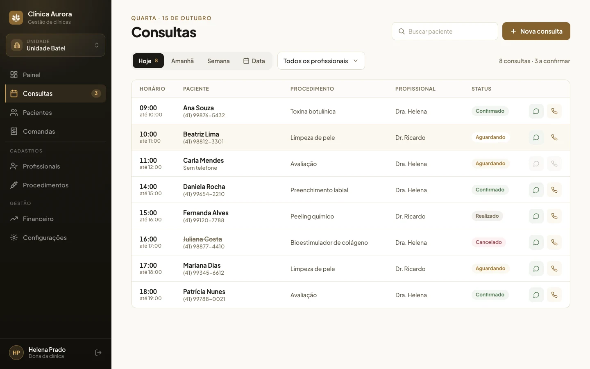
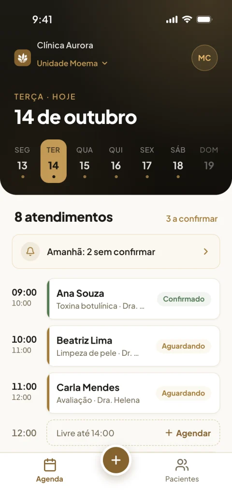
No caderno, no WhatsApp da recepção e na cabeça de quem marcou. Remarcar vira telefonema.
Preenchida no papel, na recepção, minutos antes do procedimento.
Para saber o que a paciente já fez, alguém abre uma pasta.
Cada clínica tem o seu espaço, e cada pessoa entra com o seu papel: dona, recepção ou profissional.
Apresenta o Cliniker com as telas de verdade, mostra os planos e leva cada botão para o WhatsApp.
Agenda por dia e por profissional, ficha da paciente, anamnese por link, agendamento online, equipe e procedimentos. Abre no navegador.
A agenda do dia e a ficha da paciente no celular da recepção, com o botão de WhatsApp para falar com ela.
Cada seção responde uma pergunta de quem tem clínica: o que o sistema faz, quanto custa e como começar. Todo botão abre o WhatsApp.
Abrir cliniker.app.br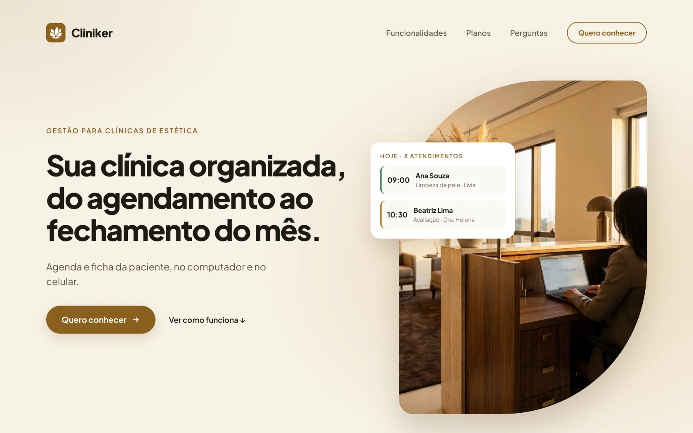
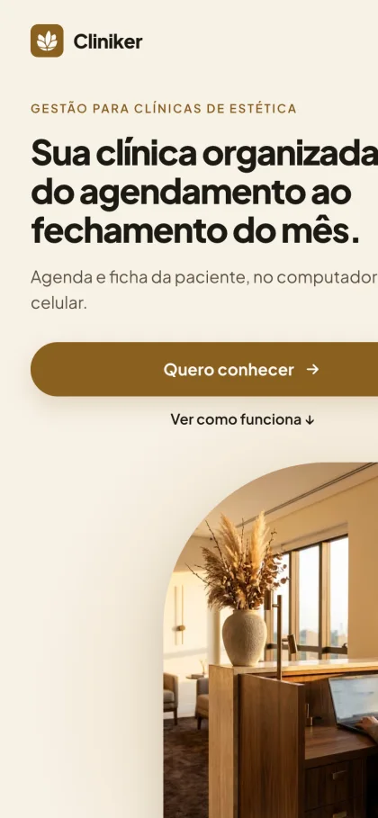
Cada consulta com horário, paciente, procedimento e profissional. Uma cor por status: aguardando, confirmado, realizado e cancelado.
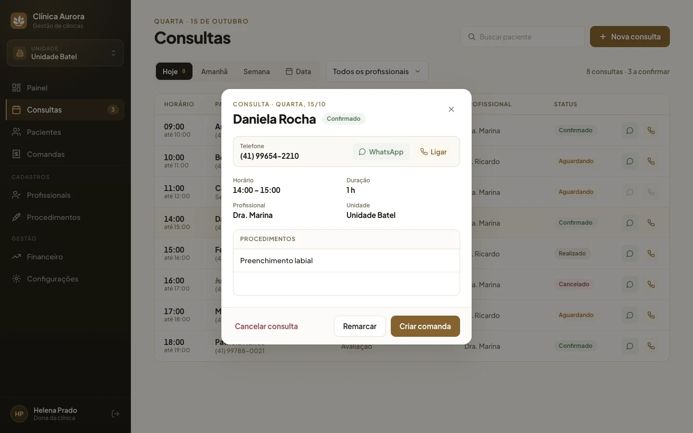
Quando, quem e o quê. O sistema recusa horário no passado e conflito com outra consulta do mesmo profissional.
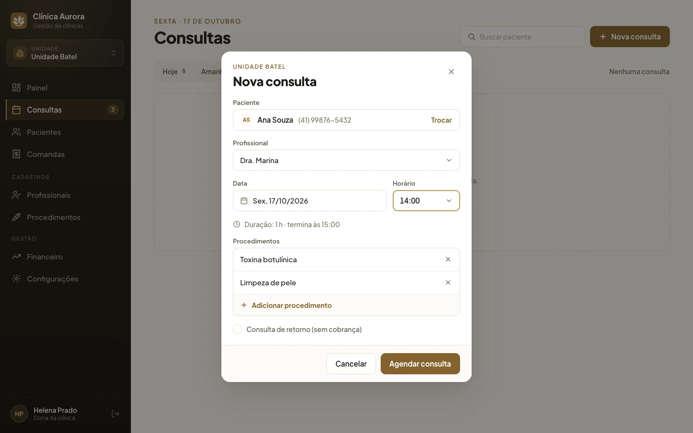
Pelo link, a paciente preenche a anamnese no celular antes de chegar. A ficha junta os dados, a anamnese e todas as consultas.
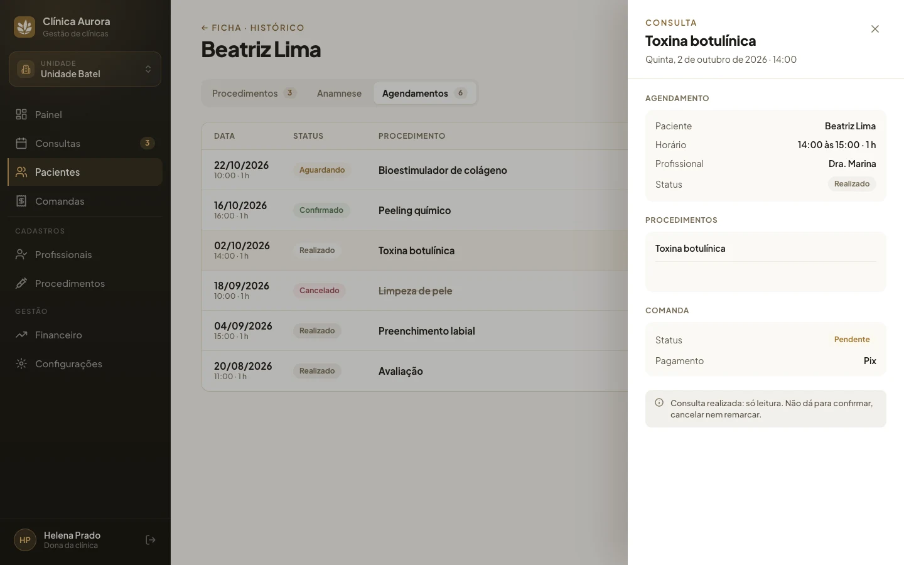
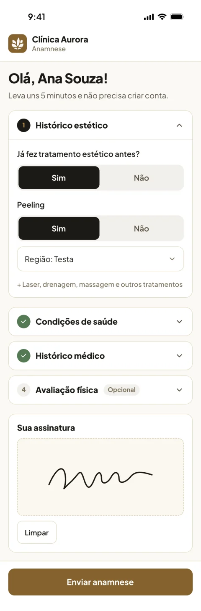
A paciente agenda sozinha pelo link e escolhe procedimento, profissional e horário. A recepção agenda e abre a ficha pelo app.
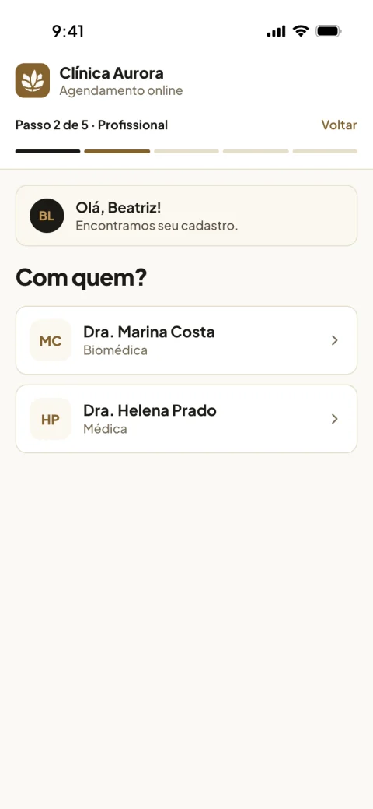
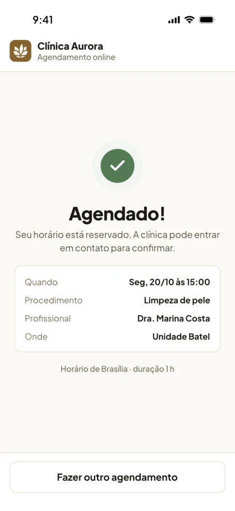
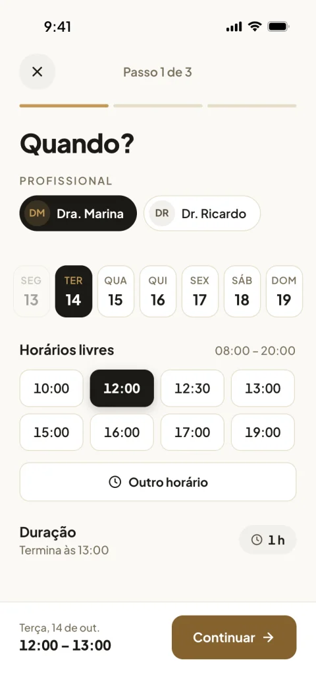
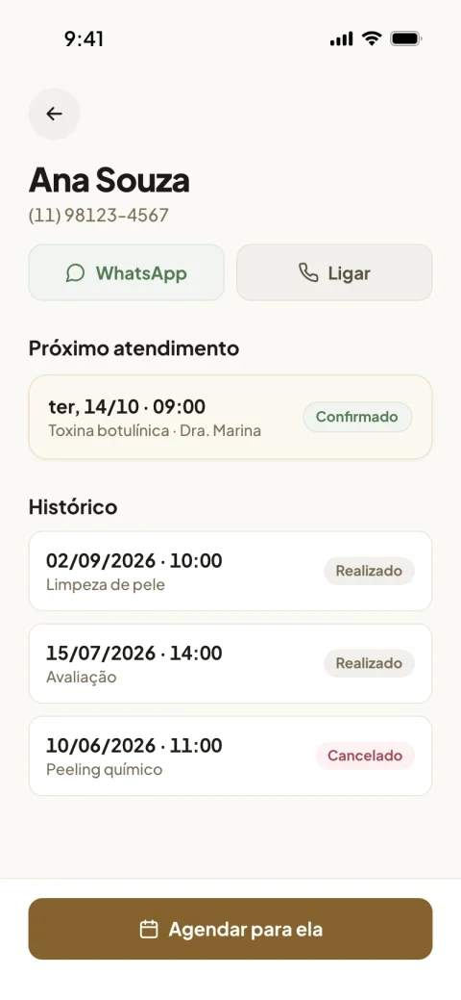
Cada tela foi desenhada e aprovada antes do código, com os estados de vazio, erro e confirmação.
Sistema e app seguem as mesmas regras da clínica. Cancelar não apaga a consulta, e remarcar volta para aguardando.
Prontuário e anamnese não têm botão de excluir, e cada versão da anamnese fica no histórico.
Conte no WhatsApp como funciona hoje. A gente mostra o que dá para tirar do papel primeiro.